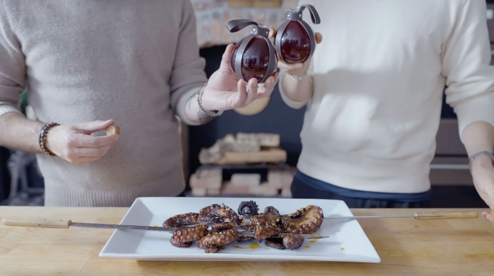

Land Octopus from Elden Ring

This recipe is Binging with Babish's attempt to recreate the Grilled Land Octopus from Elden Ring.
Ingredients
Grilled Octopus Ingredients
- 1/3 Cup dried lily flowers
- 1 (4-6lb) octopus, beak + eyes removed
- 1 large onion, quartered
- 1-inch fresh ginger, sliced
- 1/4 Cup dried nettles
- 3 garlic cloves
- 2 bay leaves
- 2 tsp black peppercorns
- 3-4 red dates
- 1 Tbsp kosher salt
- As needed cooking olive oil
- Simple Chili Oil (see below)
- As needed finishing salt
Simple Chili Oil Ingredients
- 1/3 Cup chili flakes
- 1 Cup neutral oil
- 8 cloves garlic, sliced
- 1-inch ginger, peeled + sliced
- 1 shallot, minced
Crimson Tears Tea Ingredients
- 1/4 Cup Hibiscus flowers
- 2-3 Soursop leaves
- 2 Cups hot water (~190°F)
- To taste pine bud cone syrup
Instructions
Grilled Octopus
- Soak dried lily flowers in hot water for 30 minutes.
- Meanwhile, bring a large dutch oven filled ⅔ of the way full with water to a boil, preferably over an open fire.
- Using a cleaver or large knife separate the legs from the head of the octopus.
- Cut off the stem portion of the soaked lily flowers and add them to the boiling water along with the octopus legs, onion, ginger, nettles, garlic, bay leaves, peppercorns, red dates, and salt.
- Cook for octopus until fork tender for 45 minutes - 1 hour.
- Once cooked, remove the octopus legs from the pot. Pat the legs dry and brush them with olive oil. Skewer the legs using heavy duty grilling skewers.
- Grill the octopus for 3-5 minutes per side or until well charred over an open fire or grill.
- Plate the octopus as desired and serve with Chili Oil and sprinkle with finishing salt.
Simple Chili Oil
- Add the chili flakes to a medium heat-proof bowl.
- Add the oil to a medium pot. Heat the oil over high heat until it reaches 325 °F.
- Add the garlic, ginger, and shallot to the pot and cook until crisp, about 2-3 minutes.
- Pour the hot oil over the chili flakes, be careful as the mixture will bubble aggressively, and allow it to cool at room temperature.
- Once cooled, transfer the mixture to a sealed container and store until ready to use. Optionally, blend the cooled chili oil in a food processor for a more intense heat.
Crimson Tears Tea
- Line a pour-over funnel with cheesecloth or a coffee filter.
- Add the flowers and soursop leaves to the pourover glass, then add the hot water.
- Allow the mixture to steep for 5 minutes. Then pour the strained tea into the serving glass of choice.
- Optionally, sweeten the tea to taste with pine bud cone syrup.